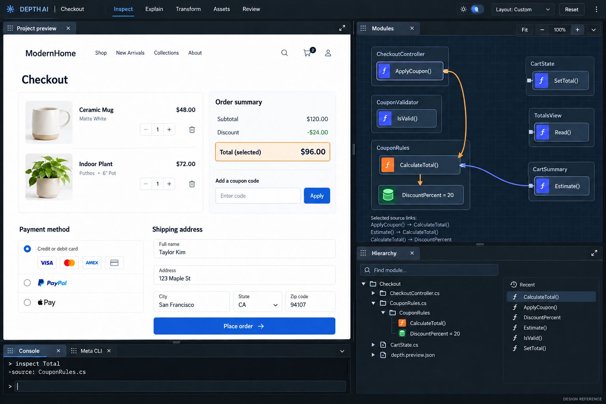
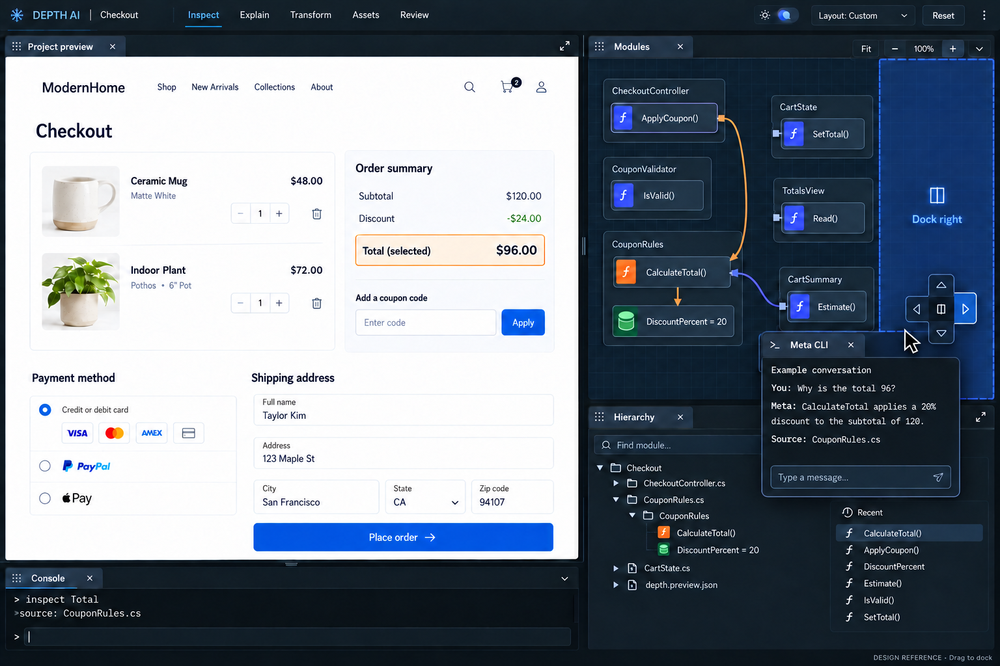
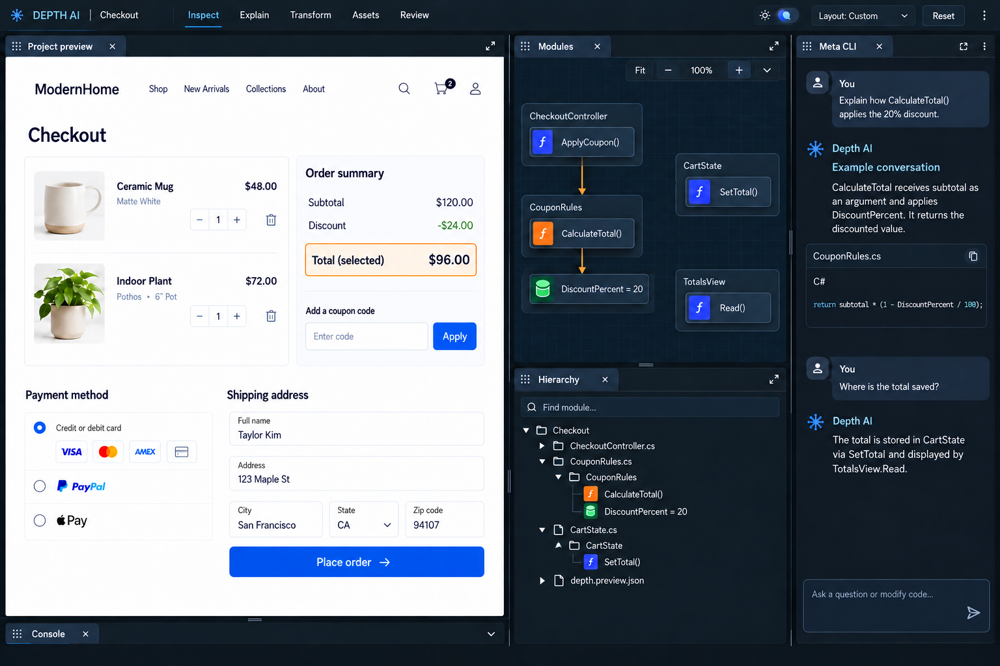

패널의 위치와 크기는 사용자가 정합니다.
콘솔은 얇은 하단 도크로 시작합니다. 프리뷰·모듈·하이어라키·콘솔·CLI는 각각 이동, 도킹, 탭 묶기, 크기 조절, 접기와 최대화가 가능한 작업창으로 설계했습니다.
직접 드래그·도킹해 보기 →별도 조작 예제 · 실제 EXE와 연결되지 않음01 · 기본 배치 — 큰 프리뷰, 얇은 콘솔
콘솔·CLI는 짧은 하단 도크에 탭으로 묶고, 주 작업면에 대부분의 공간을 줍니다.

02 · 탭 이동 — 놓을 위치를 보며 도킹
CLI 탭을 끌면 도킹할 영역을 표시합니다. 패널은 가장자리에 분할하거나 가운데에 탭으로 묶습니다.

03 · 사용자 배치 — CLI는 오른쪽, 콘솔은 접기
사용자가 바꾼 배치 예시입니다. 각 패널의 위치와 크기는 기본 좌표에 고정되지 않습니다.

조작 예제 사용법
- 탭을 패널 가장자리에 놓으면 분할 도킹, 가운데에 놓으면 탭으로 묶입니다. 작업공간 바깥쪽 가장자리에도 도킹할 수 있습니다.
- 구분선을 끌어 크기를 바꿉니다. 콘솔을 접고, 탭을 두 번 눌러 해당 패널에 집중할 수 있습니다. Esc로 복원합니다.
- ⋯ 메뉴에서 키보드로 이동하거나 띄울 수 있습니다. 떠 있는 패널의 손잡이로 위치와 크기를 조절합니다.
- Panels에서 닫은 패널을 다시 열고, Save layout으로 배치를 저장합니다. Reset으로 기본 배치를 복원합니다.
떠 있는 패널은 브라우저 작업영역 안에 있습니다. OS 별도 창·다중 모니터 분리는 이 예제에 구현하지 않았습니다. 샘플 대화는 Meta 호출이 아니며 콘솔은 셸 명령을 실행하지 않습니다.
제작: built-in image_gen. 정적 레퍼런스 3장과 조작 예제를 구분합니다. 실제 앱 반영이나 브라우저 픽셀 검증 여부는 검토 기록에 표시합니다.